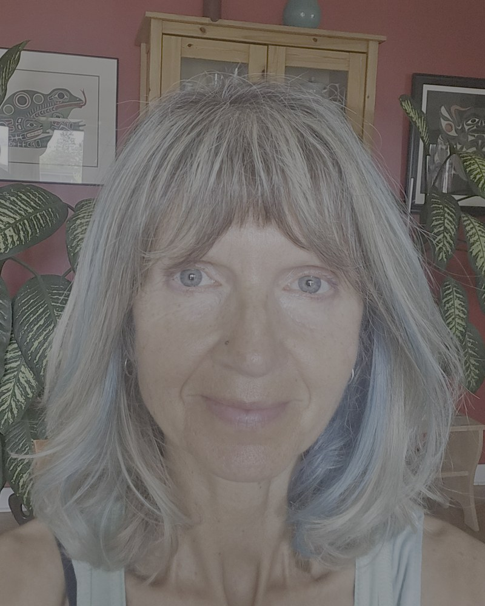

Bishop's University, Sherbrooke, Quebec, Canada

Butoh is one of the most mesmerising, transformative, and misunderstood art forms. It emerged in a post-World War II Japan through the pioneering works of Tatsumi Hijikata and Kazuo Ohno. Hijikata created a strictly choreographed method, whereas Kazuo Ohno preferred improvisation and more expansive almost spiritual approach to butoh. Today there are various styles and schools of butoh all over the world. Despite diversity, most styles share certain core elements which, I will argue, contribute to its healing potential through provocation of mildly altered states of consciousness (ASC). I will present my arguments as a butoh practitioner, dance/movement therapist, and neuroscientist. While butoh has been carefully examined through performance and aesthetic lenses, it’s only recently that researchers and practitioners started paying more attention to its intrinsic therapeutic potential. Butoh’s emphasis on body awareness (sensations, impulses), ‘somatic emptiness’ (utsuroi) and ‘being moved’, visceral choreographic notation (butoh-fu) demanding ease of transitions between states, images and concepts, authenticity and rejection of a normative body, facilitate entering ASC and align with principles found in dance/movement therapy (DMT). Thus, similarly to DMT and psychosomatic therapies, the foundation of butoh lies in cultivation of heightened sensitivity to internal and external stimuli. This leads to enhanced exteroception, proprioception and interoception, as well as reorganization of corresponding neurocircuitry, promoting emotion regulation and insight. The fact that dancers are asked to listen deeply to their body before moving, explains partly why movements in butoh are often extremely slow (though they can be extremely fast). The slowness creates a unique esthetic as well as allows escaping our ordinary, automatic speed of motion, thus promoting ASC. Another essential aspect of Butoh lies in a compromise between moving and being moved; we allow our impulses to move us from within but do not let them take over completely. Furthermore, butoh choreography (if it is used) is rarely learned as movement alone but comes with a set of visualizations, associations, metaphors. Although we see it in other dance forms, in butoh it typically follows a surrealist collage art style. The narrative is not logical or linear, but more like a dream or a kaleidoscope of apparently disconnected images. Thus, butoh dancers morph from embryos to flowers, from humans to stones, from insects to rivers. This also contributes to entering ASC. Overall, butoh dancers navigate constantly between consciousness and unconsciousness, crisis and surrender, vertical and horizontal. During my presentation I will explore further the relationship between butoh practice and various ASC (e.g., trance-like absorption, dissociation). I will provide specific examples of ASC-inducing exercises and argue that this unique dance form serves as a radical somatic discipline through which performers, and sometimes audience, access non-ordinary modes of awareness, repressed embodied memories, affective intensity, and overall dishabituation from everyday reality and mode of being. All these processes may contribute to individual and collective growth, insight and wellbeing.
Adrianna Mendrek is a Full Professor at Psychology Department, Bishop’s University, Sherbrooke, Quebec. Over the first two decades, her education and research evolved around two major themes: 1) brain function in psychiatric disorders, such as schizophrenia and drug addiction; 2) sex and gender differences/similarities in emotion and cognitive processing in psychopathology and in health. During the last decade, she has combined her long-standing passion for Eastern philosophy, dance, yoga, nature and meditation to delve into creative arts and contemplative studies. She has completed trainings in Dance/Movement Therapy, Authentic Movement, ecotherapy, two yoga teacher trainings, multiple dance workshops and performances, as well as a few silent meditation retreats.
Adrianna has obtained grants from major granting agencies in Canada during her career (CIHR, NSERC, FRQS, FRQSC) and has presented at numerous international conferences and community events. She is an author or co-author of over 100 research articles and book chapters, and approximately 250 published abstracts. She teaches Abnormal Psychology, Brain & Behavior, Psychology of Drug Addiction, Zen & the Brain, Contemplative Practicum, and Introduction to Dance/Movement Therapy. Over the years she has supervised over 100 undergraduate and graduate students.